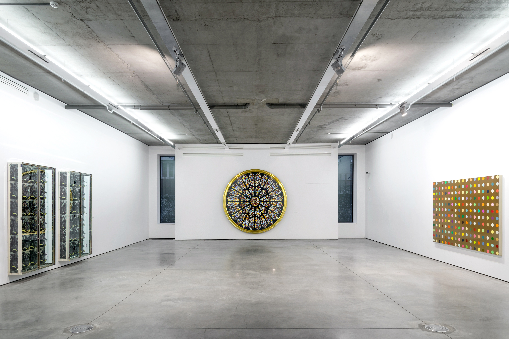
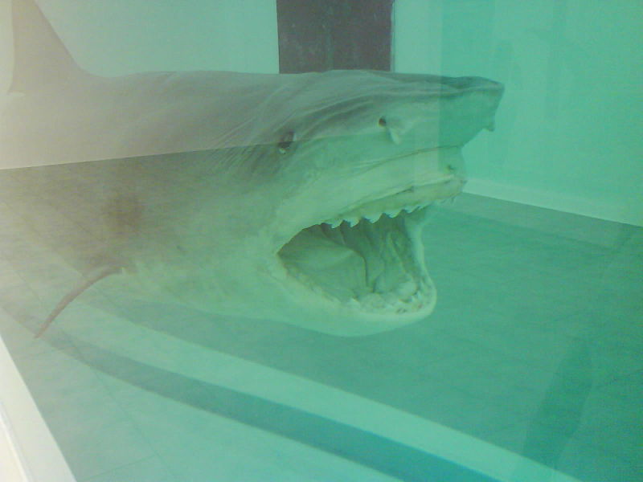
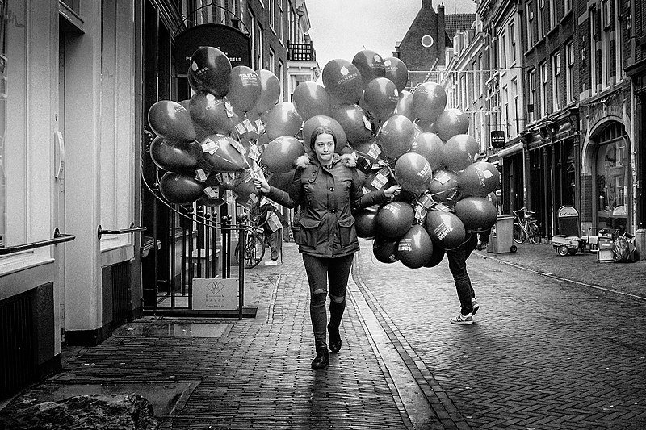
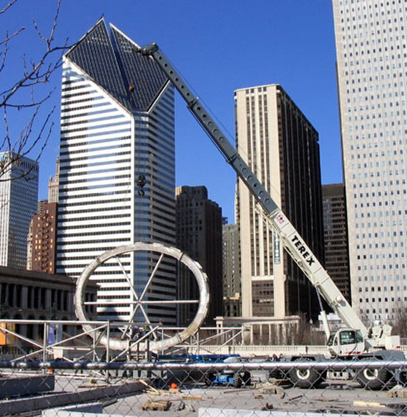
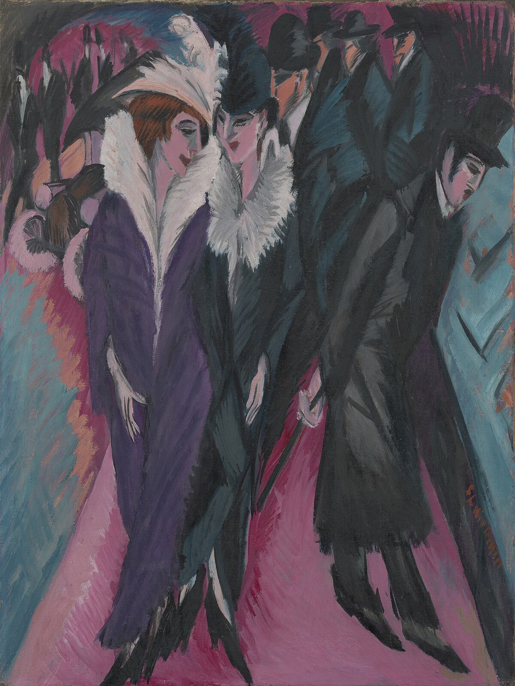
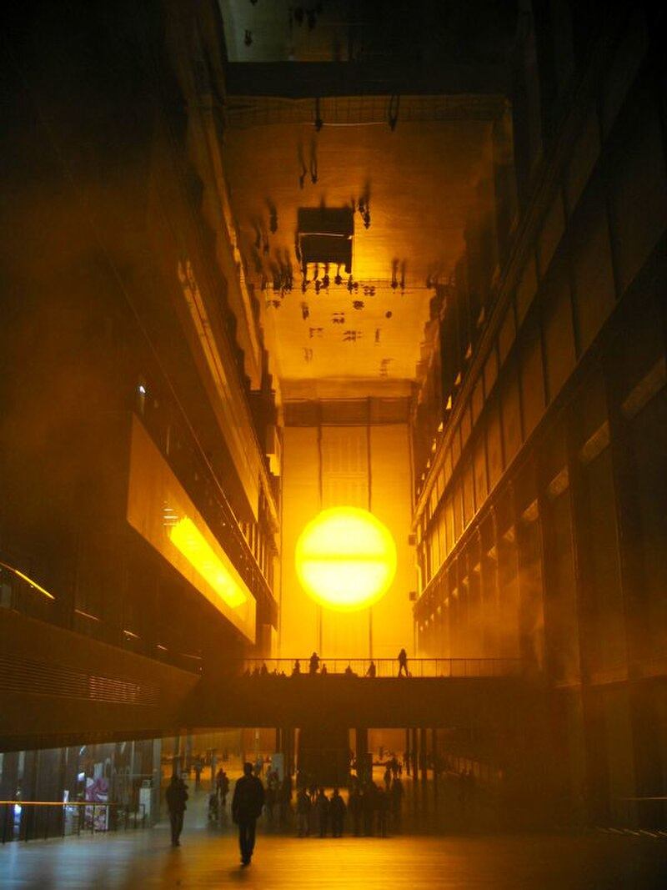
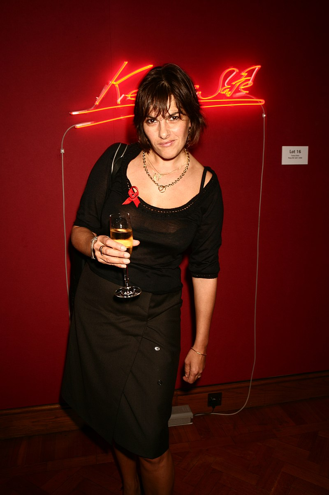
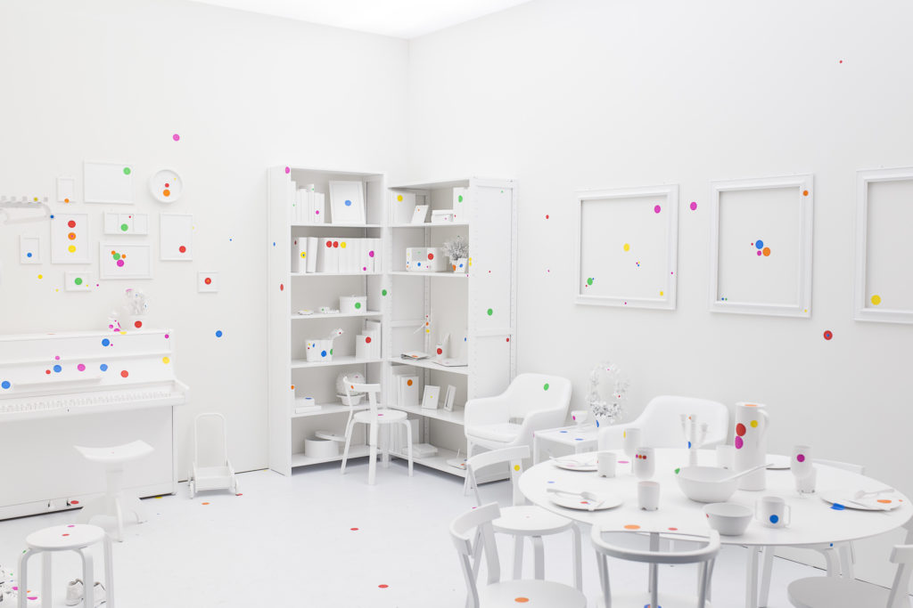

Meesterwerk: The Physical Impossibility of Death
Damien Hirst, 1991

⚜️ STIJLFIGUREN & KENMERKEN
🌐 GLOBALISERING
Wereldwijd: Kunstenaars uit alle continenten. Niet meer Westerse dominantie.
Biënnales: Venetië, Whitney, Documenta - wereldwijde platforms.
🔗 Tijdsgeest Connecties
Politiek: Val Berlijnse Muur (1989) - einde Koude Oorlog, nieuwe wereldorde
Economie: Globalisering - kunstmarkt wordt internationaal
Cultureel: Postkoloniale dialoog - wie spreekt voor wie?
🎭 IDENTITEIT & DIVERSITEIT
Gender, ras, seksualiteit: Persoonlijke identiteit als politiek statement.
Postkoloniaal: Stemmen uit de marge claimen de hoofdrol.
🔗 Tijdsgeest Connecties
Politiek: Identiteitspolitiek - erkenning van onderdrukking
Filosofie: Intersectionaliteit (Crenshaw, 1989) - meervoudige identiteit
Psychologie: Zelfwording in tegenstelling tot maatschappelijke labels
🔬 MATERIAAL & SCHOK
Young British Artists: Hirst, Emin, Kapoor - schokkende materialen.
Bio-art: Levend materiaal, DNA, lichaamsvloeistoffen.
🔗 Tijdsgeest Connecties
Wetenschap: Biotechnologie - klonen, genetische modificatie
Filosofie: Wat is leven? Wie mag creëren?
Ethiek: Dierenrechten, bio-ethiek in kunst
🏛️ INSTALLATIE & ERVARING
Immersief: De kijker is onderdeel van het werk.
Sociaal: Gemeenschapskunst, participatie.
🔗 Tijdsgeest Connecties
Psychologie: Ervaringseconomie - de beleving centraal
Sociologie: Relational Aesthetics (Bourriaud, 1998) - kunst als sociale ruimte
Politiek: Democratie in kunst - iedereen neemt deel
🔗 TIJDSGEEST CONTEXT (1970-heden)
🏛️ POLITIEK PERSPECTIEF: De val van de Berlijnse Muur (1989) beëindigt de Koude Oorlog. Globalisering versnelt - het "einde van de geschiedenis" (Fukuyama, 1992) blijkt een illusie. 9/11 (2001) en de "War on Terror" veranderen alles. De Arabische Lente (2011) toont hoop en wanhoop. Klimaatcrisis wordt urgentie (IPCC, 1988). #MeToo (2017), Black Lives Matter (2020) - sociale rechtvaardigheid domineert. De kunstenaar wordt getuige, activist, criticus.
📚 LITERAIR PERSPECTIEF: Postkoloniale literatuur bloeit (Rushdie, Morrison, Coetzee). Magisch realisme (Márquez) krijgt wereldwijde erkenning. Identiteitsverhalen worden centrale thema's. Memoires en autofictie (Knausgård, Ernaux) maken het persoonlijk politiek. De Westerse canon wordt gedecentreerd. Stemmen uit Afrika, Azië, Latijns-Amerika claimen hun plaats. Net als in de kunst: diversiteit is de nieuwe norm.
🧠 PSYCHOLOGISCH PERSPECTIEF: Trauma wordt erkend als collectieve ervaring. Postkoloniaal trauma, historisch onrecht, intergenerationele pijn. De #MeToo-beweging maakt verborgen geweld zichtbaar. Mental health wordt bespreekbaar - angst, depressie, burn-out. Therapiecultuur: "work on yourself". Kunst als therapie, kunst als verwerking. Ai Weiwei, Kader Attia - kunst als genezing en herinnering.
⚙️ HISTORISCH PERSPECTIEF: De wereld wordt één. Migratie - mensen verplaatsen zich over de hele wereld. Diaspora-identiteiten. Steden als kosmopolitische hubs. De kunstmarkt wordt globaal - Chinese kunstenaars, Afrikaanse galerieën, Indiase verzamelaars. Biënnales vermenigvuldigen zich. Musea in Dubai, Shanghai, Johannesburg. De geschiedenis van de kunst wordt herschreven - niet meer alleen Westers.
🎭 FILOSOFISCH PERSPECTIEF: Postmodernisme (Lyotard, 1979) - geen grote verhalen, alleen lokale waarheden. Relativisme en de "culture wars". Ecocentrisme - de mens is niet het centrum van het universum. Object-oriented ontology (Harman) - dingen hebben eigen bestaan. Decolonial thinking (Mignolo, Quijano) - kennisproductie is politiek. De vraag "wat is kunst?" wordt "wiens kunst?" en "voor wie?"
🎨 TIEN MEESTERWERKEN - GEDETAILLEERDE ANALYSE
1. "The Physical Impossibility of Death in the Mind of Someone Living" (1991) — Damien Hirst
Tate Modern, Londen (geleend) | Tijgerhaai in formaldehyde | 213 × 518 × 213 cm

Achtergrond
Het icoon van de Young British Artists. Een dode tijgerhaai in een vitrine vol formaldehyde. Het werk kostte £50,000 om te maken en werd later verkocht voor $8 miljoen. Een radicale confrontatie met dood, angst en het vermogen van kunst om permanente emotie op te wekken.
🔍 STIJLANALYSE
Ready-made ethiek: De haai is gevangen, gekocht, gedood en geconserveerd - het proces is controversieel.
Titel als filosofie: De titel refereert aan het onvermogen om de eigen dood te conceptualiseren (Epicurus).
Vitrine-esthetiek: Wetenschappelijke presentatie als kunstvorm - het museum wordt laboratorium.
Spectakel: Schaal en shock-waarde - de YBA-formule voor aandacht.
2. "The Artist is Present" (2010) — Marina Abramović
MoMA, New York | Performance | 736 uur (3 maanden)

Achtergrond
Abramović zat 736 uur stil in een stoel terwijl bezoekers één voor één tegenover haar mochten plaatsnemen. Een radicale verkenning van aanwezigheid, verbinding en menselijke intimiteit. De performance trok 850,000 bezoekers en werd een cultureel fenomeen.
🔍 STIJLANALYSE
Aanwezigheid als medium: De kunstenaar IS het werk - geen object, geen afbeelding, alleen zijn.
Relatie-esthetiek: De oogcontact-ervaring tussen kunstenaar en bezoeker is uniek en intiem.
Uithoudingsvermogen: Lichamelijke uitputting als artistieke statement - pijn als kunst.
Stilte: In een wereld van constante stimulus is stilte radicaal.
3. "Dropping a Han Dynasty Urn" (1995) — Ai Weiwei
Drie gelatine zilverprints | 148 × 121 cm (elk)

Achtergrond
Drie foto's tonen Ai Weiwei terwijl hij een 2000 jaar oude Han-vaas laat vallen en deze verbrijzelt. Een iconoclastische daad die vragen oproept over waarde, authenticiteit, en de relaties tussen historie en huidige cultuur. Ai vernietigt het verleden om de toekomst te bevragen.
🔍 STIJLANALYSE
Iconoclasme: Het vernietigen van iets waardevols als artistieke actie - schokkend en bevrijdend.
Historie vs. nu: De oude urn vertegenwoordigt traditie; het vernietigen ervan is revolutionair.
Documentatie: Het belangrijkste is niet het object maar de foto's van de daad.
Politiek: In China is het verleden heilig; Ai ondermijnt dit taboe.
4. "Balloon Dog (Orange)" (1994-2000) — Jeff Koons
The Broad, Los Angeles | Spiegelend roestvrij staal | 307 × 363 × 114 cm

Achtergrond
Een monumentale, spiegelende sculptuur van een ballonhond - het icoon van kitsch getransformeerd tot hoogkunst. Koons' meest herkenbare werk verkocht voor $58.4 miljoen in 2013, het hoogste bedrag ooit voor een levende kunstenaar. Een viering van populaire cultuur zonder ironie.
🔍 STIJLANALYSE
Herinterpretatie: Een kindertruc verheven tot monument - democratisering van kunst.
Materialiteit: Tijdelijkheid (ballon) vastgelegd in eeuwigheid (staal).
Reflectie: De spiegelende oppervlakken tonen de kijker - JIJ bent onderdeel van het werk.
Kitsch als strategie: Geen afstandelijke ironie maar onvoorwaardelijke liefde voor popcultuur.
5. "Cloud Gate" (2004) — Anish Kapoor
Millennium Park, Chicago | Spiegelend roestvrij staal | 10 × 20 × 12 m

Achtergrond
Bijgenaamd "The Bean" - een gigantische, spiegelende boon die de skyline van Chicago reflecteert. Kapoor's meest bekende publieke sculptuur wordt dagelijks door tienduizenden mensen bezocht. Het werk vervormt de werkelijkheid en nodigt uit tot interactie.
🔍 STIJLANALYSE
Non-vorm: Geen geometrische vorm maar een vloeibare, organische curve.
Reflectie: De stad, de wolken, de mensen - alles wordt geabstraheerd op het oppervlak.
Publieke ruimte: Kunst als ontmoetingsplaats - het object creëert sociale interactie.
Void: De "navel" onderaan trekt je visueel naar binnen - een oneindige spiegel.
6. "A Subtlety, or the Marvelous Sugar Baby" (2014) — Kara Walker
Domino Sugar Factory, Brooklyn | Polystyreen, suiker | 26 × 11 × 6 m

Achtergrond
Een monumentale, suikerbedekte sfinx met Afrikaanse gelaatstrekken in een oude suikerfabriek. Een confrontatie met de geschiedenis van slavernij, kolonialisme, en de suikerindustrie. Het werk werd bewaakt door kleine suikerbaby's en loste uiteindelijk op in de hitte.
🔍 STIJLANALYSE
Sociale sculptuur: De locatie (Domino Sugar) is essentieel - de industrie gebouwd op slavenarbeid.
Etalage: De vrouw als object - sensueel, groot, aanbiddelijk - maar gemaakt van suiker.
Ephemeraliteit: Suiker smelt, verkleurt, vergaat - tijdelijkheid als politiek statement.
Ras & gender: De exotisering van het Zwarte vrouwenlichaam door de geschiedenis heen.
7. "The Weather Project" (2003) — Olafur Eliasson
Tate Modern, Londen | Turbine Hall | Monofrequente lampen, mist

Achtergrond
Een enorme, half-zon die de Turbine Hall van Tate Modern vulde met geel licht en mist. Twee miljoen mensen kwamen kijken, liggen op de vloer, en ervaren een kunstmatige zonsondergang binnenshuis. Een onderzoek naar perceptie, natuur, en kunstmatige ervaring.
🔍 STIJLANALYSE
Natuur simuleren: Een zon gemaakt van lampen en mist - natuur als constructie.
Perceptie: Het werk speelt met hoe we zien - het spiegelende plafond verdubbelt de ruimte.
Collectieve ervaring: Mensen lagen samen op de vloer - kunst als sociale happening.
Klimaatbewustzijn: Een kunstmatige zon in een tijd van klimaatverandering.
8. "My Bed" (1998) — Tracey Emin
Tate Britain, Londen | Installatie | Bed met gebruikte lakens, afval

Achtergrond
Emin's eigen, onopgemaakte bed met vuile lakens, lege flessen, condooms, en sigarettenpeuken. Een radicale blootlegging van persoonlijk leven en vrouwelijke ervaring. Het werk veroorzaakte controverse en werd genomineerd voor de Turner Prize in 1999.
🔍 STIJLANALYSE
Confessioneel: Extreme persoonlijke openhartigheid - de private ruimte publiek gemaakt.
Vrouwelijke ervaring: Menstruatie, seks, depressie - taboes worden zichtbaar.
Ready-made: Een echt bed, echt afval - geen representatie maar presentatie.
Vulnerability: De kracht van kwetsbaarheid - kunst als therapie en getuigenis.
9. "Girl with a Balloon" (2002) — Banksy
Straatkunst, print, schilderij | Verschillende locaties en collecties

Achtergrond
Een silhouet van een meisje dat een hartvormige ballon laat ontsnappen. Een van de meest iconische straatkunstwerken, verschenen op muren in Londen en daarna als print en schilderij. In 2018 verscheurde het werk zichzelf tijdens een veiling - en werd nog waardevoller.
🔍 STIJLANALYSE
Stencils: Snel aan te brengen, herkenbare stijl - essentieel voor illegale straatkunst.
Emotie: Verlies, hoop, onschuld - universele thema's in een eenvoudig beeld.
Commodificatie: Van gratis straatkunst tot miljoenen waard - Banksy speelt met de markt.
Destructie: Het verscheurde werk ('Love is in the Bin') werd kunstgeschiedenis.
10. "Infinity Mirror Room" (1965-heden) — Yayoi Kusama
Verschillende versies wereldwijd | Spiegels, LED-verlichting, water

Achtergrond
Een oneindige ruimte van spiegels en licht waarin de bezoeker wordt ondergedompeld. Kusama's obsessieve stippen en oneindige spiegels zijn haar kenmerk. Haar werk werd populair bij millennials via Instagram - lange wachtrijen voor selfies in de spiegelkamers.
🔍 STIJLANALYSE
Oneindigheid: Spiegels creëren een eindeloze ruimte - kosmische ervaring.
Obsessie: Herhaling van stippen als persoonlijke obsessie en therapeutisch proces.
Immersie: De kijker wordt volledig opgeslokt door het kunstwerk.
Instagram-cultuur: Het werk is perfect voor social media - beeldvorming als nieuwe ervaring.